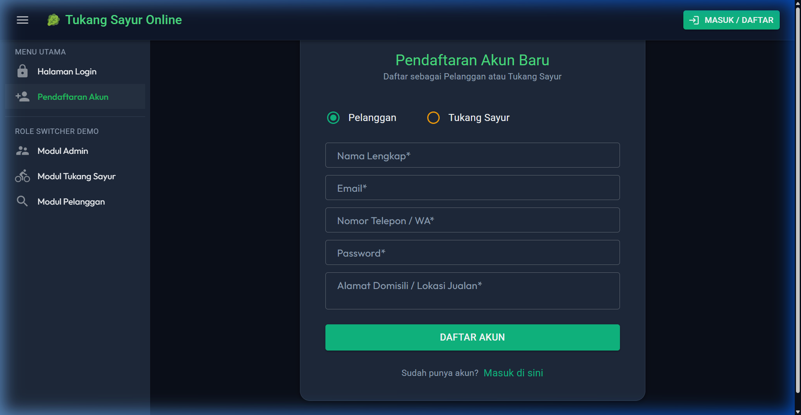
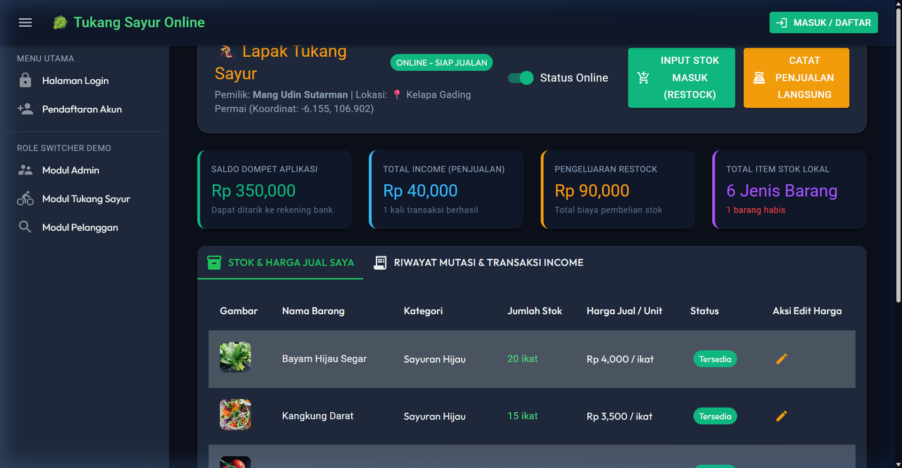
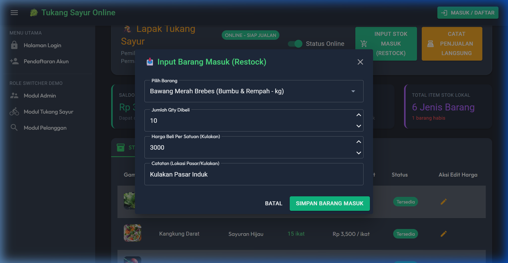
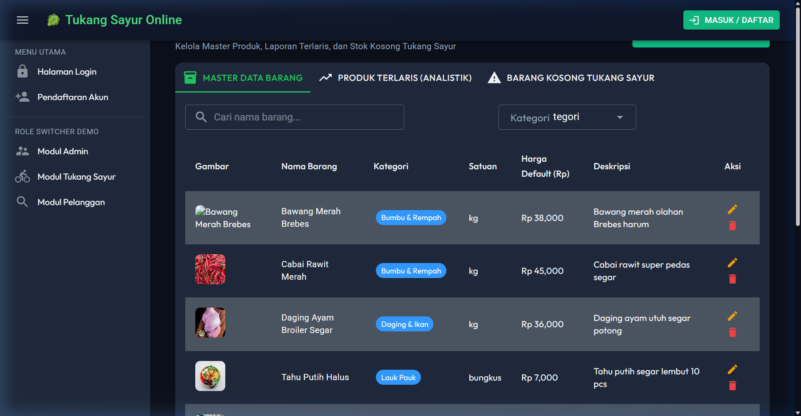
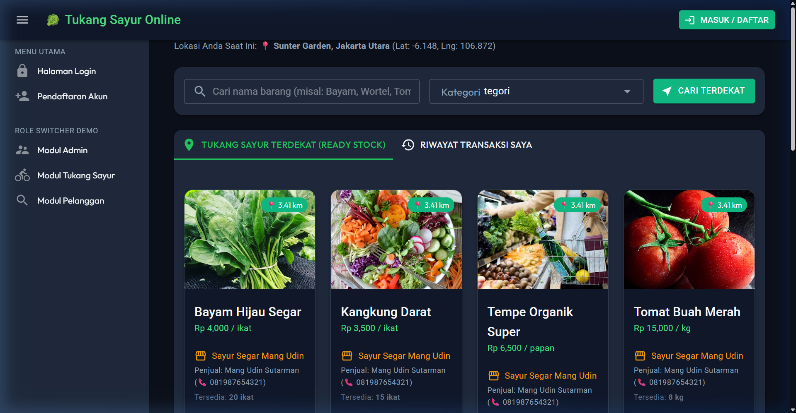

Platform ini memodernisasi ekosistem pedagang sayur tradisional dengan menyediakan transparansi persediaan barang berbasis lokasi, pencatatan otomatis transaksi kulakan (restock) & penjualan kasir, serta notifikasi stok kosong real-time.
- Sakelar keaktifan toko (Online/Offline Toggle)
- Pencarian pedagang terdekat berdasarkan lokasi GPS
- Auto-hide produk jika stok 0 atau pedagang offline
- Dashboard analitik produk terlaris & barang kosong admin
| Fitur / Modul | Admin Portal | Tukang Sayur (Vendor) | Pelanggan (Customer) |
|---|---|---|---|
| Pendaftaran & Otentikasi | 🔒 System Admin | ✅ Registrasi Mandiri | ✅ Registrasi Mandiri |
| Kelola Master Katalog Produk | ✅ Buat, Edit, Hapus | ❌ Read-Only | ❌ Read-Only |
| Input Restock (Stok Masuk) | ❌ | ✅ Tambah Stok & Catat Modal | ❌ |
| Catat Penjualan Langsung (Offline) | ❌ | ✅ Potong Stok + Tambah Saldo | ❌ |
| Sakelar Status Online / Offline | ❌ | ✅ Kontrol Visibilitas Toko | ❌ |
| Pencarian Sayur Terdekat (GPS) | ❌ | ❌ | ✅ Urutkan Jarak & Stok Ready |
| Transaksi Pembelian Online | ❌ | ❌ | ✅ Pilih Qty & Alamat Kirim |
/register) memungkinkan pengguna memilih peran sebagai Pelanggan atau Tukang Sayur. Untuk pedagang sayur, isi Nama Toko (contoh: Toko Sayur Bang Jhon) dan Alamat Domisili untuk pengaktifan lokasi jualan.


INPUT STOK MASUK (RESTOCK) untuk mencatat barang yang dibeli dari pasar modal. Masukkan nama barang, jumlah kuantitas, harga beli per satuan, serta lokasi pasar tempat kulakan.

/admin) berfungsi mengelola Master Data Barang secara terpusat, memantau peringkat produk paling laku (*Analistik Produk Terlaris*), serta memantau toko mana saja yang stok barangnya sedang kosong.

/pelanggan untuk mencari bahan makanan dari Tukang Sayur Terdekat. Sistem secara otomatis menghitung jarak toko (contoh: 3.41 km) dan hanya menampilkan toko yang berstatus ONLINE dengan persediaan stok tersedia.
